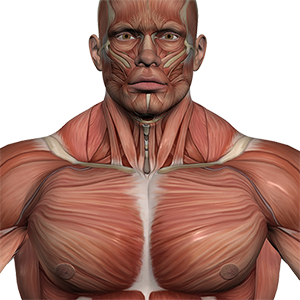

Изображения
Элемент img
Элемент img внедряет изображение в текущий документ в месте определения элемента. Элемент img не имеет содержимого — он замещается на ходу изображением, указанным в атрибуте src.
Задание 1. Вставьте на страницу изображение aquaria.jpg

Альтернативный текст
Атрибут alt предоставляет краткое описание изображения. Он содержит альтернативный текст, который отображается, если изображение не может быть выведено.
Задание 2. Вставьте на страницу изображение с ошибочной ссылкой slon.png

Размеры изображения
Атрибуты width и height задают размеры области изображения.
Задание 3. Вставьте на страницу изображение redcat.jpg с указанием его ширины и высоты.

Для добавления гибких изображений используют атрибуты sizes и srcset.
Задание 4. Вставьте на страницу изображение mushroom.jpg или mushroom_portrait.jpg или mushroom_landscape.jpg или mushroom_retina.jpg в зависимости от условий.

Подпись к изображению
Для группирования изображения и подписи используется элемент figure, а описание задаётся через figcaption.
Задание 5. Вставьте на страницу изображение globus.gif с подписью к нему.

Элемент picture
Элемент picture позволяет выбирать оптимальный формат изображения для браузера.
Задание 6. Вставьте на страницу изображение html5-logo в растровом или векторном формате в зависимости от поддержки браузером этих форматов.
Оптимизация изображений
Современные форматы WebP и AVIF позволяют уменьшить размер файлов при хорошем качестве изображения.
Задание 7. Добавьте на страницу изображения muscle.webp и light.avif.
